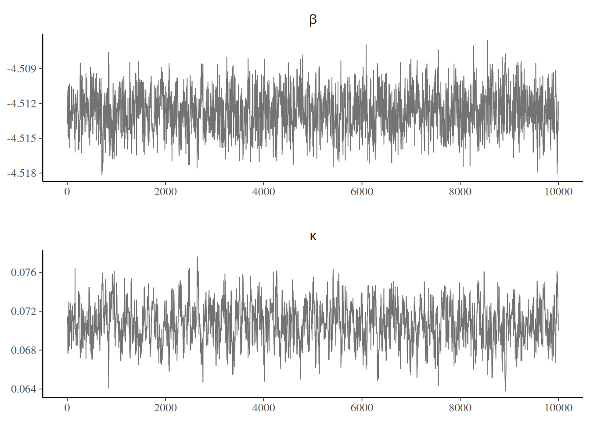

The Markov chain Monte Carlo revolution in the 1990s made Bayesian inference mainstream by allowing inference for models when only approximations were permitted, and coincided with a time at which computers became more widely available. The idea is to draw correlated samples from a posterior via Markov chains, constructed to have the posterior as invariant stationary distribution.
Learning objectives:
At the end of the chapter, students should be able to
implement a Metropolis–Hastings algorithm to draw samples from the posterior
tune proposals to obtain good mixing properties.
Named after Metropolis et al. (1953), Hastings (1970), its relevance took a long time to gain traction in the statistical community. The idea of the Metropolis–Hastings algorithm is to construct a Markov chain targeting a distribution \(p(\cdot).\)
Proposition 5.1 (Metropolis–Hastings algorithm) We consider from a density function \(p(\boldsymbol{\theta}),\) known up to a normalizing factor not depending on \(\boldsymbol{\theta}.\) We use a (conditional) proposal density \(q(\boldsymbol{\theta} \mid \boldsymbol{\theta}^*)\) which has non-zero probability over the support of \(p(\cdot),\) as transition kernel to generate proposals.
The Metropolis–Hastings build a Markov chain starting from an initial value \(\boldsymbol{\theta}_0:\)
draw a proposal value \(\boldsymbol{\theta}_t^{\star} \sim q(\boldsymbol{\theta} \mid \boldsymbol{\theta}_{t-1}).\)
Compute the acceptance ratio \[
R = \frac{p(\boldsymbol{\theta}_t^{\star})}{p(\boldsymbol{\theta}_{t-1})}\frac{q(\boldsymbol{\theta}_{t-1} \mid \boldsymbol{\theta}_t^{\star} )}{q(\boldsymbol{\theta}_t^{\star} \mid \boldsymbol{\theta}_{t-1})}
\tag{5.1}\]
With probability \(\min\{R, 1\},\) accept the proposal and set \(\boldsymbol{\theta}_t \gets \boldsymbol{\theta}_t^{\star},\) otherwise set the value to the previous state, \(\boldsymbol{\theta}_t \gets \boldsymbol{\theta}_{t-1}.\)
The following theoretical details provided for completeness only.
Definition 5.1 (Detailed balance) If our target is \(p(\cdot),\) then the Markov chain satisfies the detailed balance condition with respect to \(p(\cdot)\) if \[\begin{align*}
K(\boldsymbol{\theta}^{\text{cur}}, \boldsymbol{\theta}^{\text{prop}})p(\boldsymbol{\theta}^{\text{cur}}) = K(\boldsymbol{\theta}^{\text{prop}}, \boldsymbol{\theta}^{\text{cur}})p(\boldsymbol{\theta}^{\text{prop}}).
\end{align*}\] If a Markov chain satisfies the detailed balance with respect to \(p(\cdot),\) then the latter is necessarily the invariant density of the Markov chain and the latter is reversible.
Proposition 5.2 (Metropolis–Hastings satisfies detailed balance) The Metropolis–Hastings algorithm has transition kernel for a move from \(\boldsymbol{x}\) to a proposal \(\boldsymbol{y}\)\[\begin{align*}
K(\boldsymbol{x}, \boldsymbol{y}) = \alpha(\boldsymbol{x}, \boldsymbol{y}) q(\boldsymbol{y} \mid \boldsymbol{x}) + \{1- r(\boldsymbol{x})\}\mathsf{I}(\boldsymbol{y}=\boldsymbol{x})
\end{align*}\] where \(r(\boldsymbol{x})=\int \alpha(\boldsymbol{x}, \boldsymbol{y}) q(\boldsymbol{y} \mid \boldsymbol{x})\mathrm{d} \boldsymbol{y}\) is the average probability of acceptance of a move from \(\boldsymbol{x},\)\(\mathsf{I}(\cdot = \boldsymbol{x})\) is a point mass at \(\boldsymbol{x},\) and \(\alpha(\cdot)\) is defined on the next slide.
One can show that the Metropolis–Hastings algorithm satisfies detailed balanced; see, e.g., Theorem 7.2 of Robert and Casella (2004).
If \(\boldsymbol{\theta}_{t}\) is drawn from the posterior, then the left hand side is the joint density of \((\boldsymbol{\theta}_{t}, \boldsymbol{\theta}_{t+1})\) and the marginal distribution obtained by integrating over \(\boldsymbol{\theta}_{t},\)\[\begin{align*}
\int f(\boldsymbol{\theta}_{t+1} \mid \boldsymbol{\theta}_{t})p(\boldsymbol{\theta}_{t} \mid \boldsymbol{y})\mathrm{d} \boldsymbol{\theta}_{t}
& = \int f(\boldsymbol{\theta}_{t} \mid \boldsymbol{\theta}_{t+1})p(\boldsymbol{\theta}_{t+1} \mid \boldsymbol{y})\mathrm{d} \boldsymbol{\theta}_{t}
\\&\quad= p(\boldsymbol{\theta}_{t+1} \mid \boldsymbol{y})
\end{align*}\] and any draw from the posterior will generate a new realization from the posterior. It also ensures that, provided the starting value has non-zero probability under the posterior, the chain will converge to the stationarity distribution (albeit perhaps slowly).
Remark (Interpretation of the algorithm). If \(R>1,\) the proposal has higher density and we always accept the move. If the ratio is less than one, the proposal is in a lower probability region, we accept the move with probability \(R\) and set \(\boldsymbol{\theta}_{t}=\boldsymbol{\theta}^{\star}_t\); if we reject, the Markov chain stays at the current value, which induces autocorrelation. Since the acceptance probability depends only on the density through ratios, we can work with unnormalized density functions and this is what allows us, if our proposal density is the (marginal) posterior of the parameter, to obtain approximate posterior samples without having to compute the marginal likelihood.
Remark (Blank run). To check that the algorithm is well-defined, we can remove the log likelihood component and run the algorithm: if it is correct, the resulting draws should be drawn from the prior provided the latter is proper (Green 2001, 55).
Remark (Symmetric proposals). Suppose we generate a candidate sample \(\boldsymbol{\theta}_t^{\star}\) from a symmetric distribution \(q(\cdot \mid \cdot)\) centered at \(\boldsymbol{\theta}_{t-1},\) such as the random walk \(\boldsymbol{\theta}_t^{\star} =\boldsymbol{\theta}_{t-1}+ Z\) where \(Z\) has a symmetric distribution. Then, the proposal density ratio cancels so need not be computed in the Metropolis ratio of Equation 5.1.
Remark (Calculations). In practice, we compute the log of the acceptance ratio, \(\ln R,\) to avoid numerical overflow. If our target is log posterior density, we have \[
\ln \left\{\frac{p(\boldsymbol{\theta}_t^{\star})}{p(\boldsymbol{\theta}_{t-1})}\right\} = \ell(\boldsymbol{\theta}_t^{\star}) + \ln p(\boldsymbol{\theta}_t^{\star}) - \ell(\boldsymbol{\theta}_{t-1}) - \ln p(\boldsymbol{\theta}_{t-1})
\] and we proceed likewise for the log of the ratio of transition kernels. We then compare the value of \(\ln R\) (if less than zero) to \(\log(U),\) where \(U \sim \mathsf{U}(0,1).\) We accept the move if \(\ln(R) >\log(U)\) and keep the previous value otherwise.
Example 5.1 Consider again the Upworthy data from Example 3.5. We model the Poisson rates \(\lambda_i\)\((i=1,2),\) this time with the usual Poisson regression parametrization in terms of log rate for the baseline , \(\log(\lambda_2) = \beta,\) and log odds rates \(\kappa = \log(\lambda_1) - \log(\lambda_2).\) Our model is \[\begin{align*}
Y_{i} &\sim \mathsf{Po}(n_i\lambda_i), \qquad (i=1,2)\\
\lambda_1 &= \exp(\beta + \kappa) \\
\lambda_2 &= \exp(\beta) \\
\beta & \sim \mathsf{Gauss}(\log 0.01, 1.5) \\
\kappa &\sim \mathsf{Gauss}(0, 1)
\end{align*}\] There are two parameters in the model, which can be updated in turn or jointly.
data(upworthy_question, package ="hecbayes")# Compute sufficient statisticsdata <- upworthy_question |> dplyr::group_by(question) |> dplyr::summarize(ntot =sum(impressions),y =sum(clicks))# Code log posterior as sum of log likelihood and log priorloglik <-function(par, counts = data$y, offset = data$ntot, ...){ lambda <-exp(c(par[1] +log(offset[1]), par[1] + par[2] +log(offset[2])))sum(dpois(x = counts, lambda = lambda, log =TRUE))}logprior <-function(par, ...){dnorm(x = par[1], mean =log(0.01), sd =1.5, log =TRUE) +dnorm(x = par[2], log =TRUE)}logpost <-function(par, ...){loglik(par, ...) +logprior(par, ...)}# Compute maximum a posteriori (MAP)map <-optim(par =c(-4, 0.07),fn = logpost,control =list(fnscale =-1),offset = data$ntot,counts = data$y,hessian =TRUE)# Use MAP as starting valuecur <- map$par# Compute logpost_cur - we can keep track of this to reduce calculationslogpost_cur <-logpost(cur)# Proposal covariancecov_map <--2*solve(map$hessian)chol <-chol(cov_map)set.seed(80601)niter <-1e4Lchain <-matrix(0, nrow = niter, ncol =2L)colnames(chain) <-c("beta","kappa")naccept <-0Lfor(i inseq_len(niter)){# Multivariate normal proposal - symmetric random walk prop <- chol %*%rnorm(n =2) + cur logpost_prop <-logpost(prop)# Compute acceptance ratio (no q because the ratio is 1) logR <- logpost_prop - logpost_curif(logR >-rexp(1)){ cur <- prop logpost_cur <- logpost_prop naccept <- naccept +1L } chain[i,] <- cur}# Posterior summariessummary(coda::as.mcmc(chain))
Iterations = 1:10000
Thinning interval = 1
Number of chains = 1
Sample size per chain = 10000
1. Empirical mean and standard deviation for each variable,
plus standard error of the mean:
Mean SD Naive SE Time-series SE
beta -4.51268 0.001697 1.697e-05 6.176e-05
kappa 0.07075 0.002033 2.033e-05 9.741e-05
2. Quantiles for each variable:
2.5% 25% 50% 75% 97.5%
beta -4.51591 -4.51385 -4.51273 -4.51154 -4.50929
kappa 0.06673 0.06933 0.07077 0.07212 0.07463
# Computing standard errors using batch meanssqrt(diag(mcmc::olbm(chain, batch.length = niter/40)))
[1] 5.717097e-05 8.220816e-05
The acceptance rate of the algorithm is 35.1% and the posterior means are \(\beta =-4.51\) and \(\kappa =0.07.\)

Figure 5.1: Traceplots of Markov chain of log rate and log odds rate for the Metropolis–Hastings sampler applied to the Upworthy question data.
Figure 5.2 shows the posterior samples, which are very nearly bivariate Gaussian. The parametrization in terms of log odds ratio induces strong negative dependence, so if we were to sample \(\kappa,\) then \(\beta,\) we would have much larger inefficiency and slower exploration. Instead, the code used a bivariate Gaussian random walk proposal whose covariance matrix was taken as a multiple of the inverse of the negative hessian (equivalently, to the observed information matrix of the log posterior), evaluated at of the maximum a posteriori. This Gaussian approximation is called Laplace approximation: it is advisable to reparametrize the model so that the distribution is nearly symmetric, so that the approximation is good. In this example, because of the large sample, the Gaussian approximation implied by Bernstein–von Mises’ theorem is excellent.
Figure 5.2: Scatterplot of posterior draws (left) and marginal density plot of log odds rate (right).
Remark 5.1 (Reparametrization). A better parametrization would simply sample two parameters with \(\lambda_2 = \exp(\alpha),\) where \(\alpha\) is the log mean of the second group, with the same prior as for \(\beta.\) Since the likelihood factorizes and the parameters are independent apriori, this would lead to zero correlation and lead to more efficient mixing of the Markov chain, should we wish to sample parameters in turn one at the time. A Markov chain for \(\kappa\) can then be obtained by substracting the values of \(\alpha-\beta\) from the new draws.
The quality of the mixing of the chain (autocorrelation), depends on the proposal variance, which can obtain by trial and error. Trace plots Figure 5.1 show the values of the chain as a function of iteration number. If our algorithm works well, we expect the proposals to center around the posterior mode and resemble a fat hairy caterpillar. If the variance is too small, the acceptance rate will increase but most steps will be small. If the variance of the proposal is too high, the acceptance rate will decrease (as many proposal moves will have much lower posterior), so the chain will get stuck for long periods of time. This is Goldilock’s principle, as illustrated in Figure 5.3.
Figure 5.3: Example of traceplot with proposal variance that is too small (top), adequate (middle) and too large (bottom).
One way to calibrate is to track the acceptance rate of the proposals: for the three chains in Figure 5.3, these are 0.932, 0.33, 0.12. In one-dimensional toy problems with Gaussian distributions, an acceptance rate of 0.44 is optimal, and this ratio decreases to 0.234 when \(D \geq 2\)(Roberts and Rosenthal 2001; Sherlock 2013). This need not generalize to other settings and depends on the context. Optimal rate for alternative algorithms, such as Metropolis-adjusted Langevin algorithm, are typically higher.
We can tune the variance of the global proposal (Andrieu and Thoms 2008) to improve the mixing of the chains at approximate stationarity. This is done by increasing (decreasing) the variance if the historical acceptance rate is too high (respectively low) during the burn in period, and reinitializing after any change with an acceptance target of \(0.44.\) We stop adapting to ensure convergence to the posterior after a suitable number of initial iterations. Adaptive MCMC methods use an initial warm up period to find good proposals: we can consider a block of length \(L,\) compute the acceptance rate, multiply the variance by a scaling factor and run the chain a little longer. We only keep samples obtained after the adaptation phase.
We can also plot the autocorrelation of the entries of the chain as a function of lags, a display known as correlogram in the time series literature but colloquially referred to as autocorrelation function (acf). The higher the autocorrelation, the more variance inflation one has and the longer the number of steps before two draws are treated as independent. Figure 5.4 shows the effect of the proposal variance on the correlation for the three chains. Practitioners designing very inefficient Markov chain Monte Carlo algorithms often thin their series: that is, they keep only every \(k\) iteration. This is not recommended practice unless storage is an issue and usually points towards inefficient sampling algorithms.
Figure 5.4: Correlogram for the three Markov chains.
Remark (Independence Metropolis–Hastings). If the proposal density \(q(\cdot)\) does not depend on the current state \(\boldsymbol{\theta}_{t-1},\) the algorithm is termed independence. To maximize acceptance, we could design a candidate distribution whose mode is at the maximum a posteriori value. To efficiently explore the state space, we need to place enough density in all regions, for example by taking a heavy-tailed distributions, so that we explore the full support. Such proposals can be however inefficient and fail when the distribution of interest is multimodal. The independence Metropolis–Hastings algorithm then resembles accept-reject. If the ratio \(p(\boldsymbol{\theta})/q(\boldsymbol{\theta})\) is bounded above by \(C \geq 1,\) then we can make comparisons with rejection sampling. Lemma 7.9 of Robert and Casella (2004) shows that the probability of acceptance of a move for the Markov chain is at least \(1/C,\) which is larger than the accept-reject.
In models with multiple parameter, we can use Metropolis–Hastings algorithm to update every parameter in turn, fixing the value of the others, rather than update them in block. The reason behind this pragmatic choice is that, as for ordinary Monte Carlo sampling, the acceptance rate goes down sharply with the dimension of the vector. Updating parameters one at a time can lead to higher acceptance rates, but slower exploration as a result of the correlation between parameters.
If we can factorize the log posterior, then some updates may not depend on all parameters: in a hierarchical model, hyperpriors parameter only appear through priors, etc. This can reduce computational costs.
Proposition 5.3 (Parameter transformation) If a parameter is bounded in the interval \((a,b),\) where \(-\infty \leq a < b \leq \infty,\) we can consider a bijective transformation \(\vartheta \equiv t(\theta): (a,b) \to \mathbb{R}\) with differentiable inverse. The log density of the transformed variable, assuming it exists, is \[\begin{align*}
f_\vartheta(\vartheta) = f_{\theta}\{t^{-1}(\vartheta)\} \left| \frac{\mathrm{d}}{\mathrm{d} \vartheta} t^{-1}(\vartheta)\right|
\end{align*}\] For example, we can use of the following transformations for finite \(a, b\) in the software:
if \(\theta \in (a, \infty)\) (lower bound only), then \(\vartheta = \log(\theta-a)\) and \(f_{\vartheta}(\vartheta)=f_{\theta}\{\exp(\vartheta) + a\}\cdot \exp(\vartheta)\)
if \(\theta \in (-\infty, b)\) (upper bound only), then \(\vartheta = \log(b-\theta)\) and \(f_{\vartheta}(\vartheta)=f_{\theta}\{b-\exp(\vartheta)\}\cdot \exp(\vartheta)\)
if \(\theta \in (a, b)\) (both lower and upper bound), then \(\vartheta = \mathrm{logit}\{(\theta-a)/(b-a)\}\) and \[\begin{align*}
f_{\vartheta}(\vartheta)&=f_{\theta}\{a+(b-a) \mathrm{expit}(\vartheta)\} (b-a)\\&\quad \times \mathrm{expit}(\vartheta)\{1-\mathrm{expit}(\vartheta)\}
\end{align*}\]
To guarantee that our proposals fall in the support of \(\theta,\) we can thus run a symmetric random walk proposal on the transformed scale by drawing \(\vartheta_{t}^{\star} \sim \vartheta_{t-1}+\tau Z\) where \(Z\sim\mathsf{Gauss}(0, 1).\) Due to the transformation, the kernel ratio now contains the Jacobian.
Proposition 5.4 (Truncated proposals) As an alternative, if we are dealing with parameters that are restricted in \([a,b],\) we can simulate using a random walk but with truncated Gaussian steps, taking \(\theta^{\star}_{t} \sim \mathsf{trunc. Gauss}(\vartheta_{t-1}, \tau^2, a, b).\) The benefits of using the truncated proposal becomes more apparent when we move to more advanced proposals whose mean and variance depends on the gradient and or the hessian of the underlying unnormalized log posterior, as the mean can be lower than \(a\) or larger than \(b\): this would garantee zero acceptance with regular Gaussian random walk. The TruncatedNormal package can be used to efficiently evaluate such instances using results from Botev and L’Écuyer (2017) even when the truncation bounds are far from the mode. the normalizing constant of the truncated Gaussian in the denominator of the density is a function of the location and scale parameters: if these depend on the current value of \(\boldsymbol{\theta}_{t-1},\) as is the case for a random walk, we need to keep these terms as part of the Metropolis ratio. The mean and standard deviation of the truncated Gaussian are not equal to the parameters \(\mu\) (which corresponds to the mode, provided \(a < \mu < b\)) and \(\sigma.\)
Proposition 5.5 (Efficient proposals) Rather than simply build a random walk, we can exploit the geometry of the posterior using the gradient, via Metropolis-ajusted Langevin algorithm (MALA), or using local quadratic approximations of the target.
Let \(p(\theta)\) denote the conditional (unnormalized) log posterior for a scalar parameter \(\theta \in (a, b).\) We considering a Taylor series expansion of \(p(\cdot)\) around the current parameter value \(\theta_{t-1},\)\[\begin{align*}
p(\theta) \approx p(\theta_{t-1}) + p'(\theta_{t-1})(\theta - \theta_{t-1}) + \frac{1}{2} p''(\theta_{t-1})(\theta - \theta_{t-1})^2
\end{align*}\] plus remainder, which suggests a Gaussian approximation with mean \(\mu_{t-1} = \theta_{t-1} - f'(\theta_{t-1})/f''(\theta_{t-1})\) and precision \(\tau^{-2} = -f''(\theta_{t-1}).\) We can use truncated Gaussian distribution on \((a, b)\) with mean \(\mu\) and standard deviation \(\tau,\) denoted \(\mathsf{trunc. Gauss}(\mu, \tau, a, b)\) with corresponding density function \(q(\cdot; \mu, \tau, a, b).\) The Metropolis acceptance ratio for a proposal \(\theta^{\star}_{t} \sim \mathsf{trunc. Gauss}(\mu_{t-1}, \tau_{t-1}, a, b)\) is \[\begin{align*}
\alpha = \frac{p(\theta^{\star}_{t})}{p(\theta_{t-1})} \frac{ q(\theta_{t-1} \mid \mu_{t}^{\star}, \tau_{t}^{\star}, a, b)}{q(\theta^{\star}_{t} \mid \mu_{t-1}, \tau_{t-1}, a, b)}
\end{align*}\] and we set \(\theta^{(t+1)} = \theta^{\star}_{t}\) with probability \(\min\{1, r\}\) and \(\theta^{(t+1)} = \theta_{t-1}\) otherwise. To evaluate the ratio of truncated Gaussian densities \(q(\cdot; \mu, \tau, a, b),\) we need to compute the Taylor approximation from the current parameter value, but also the reverse move from the proposal \(\theta^{\star}_{t}.\) Another option is to modify the move dictated by the rescaled gradient by taking instead \[\mu_{t-1} = \theta_{t-1} - \eta f'(\theta_{t-1})/f''(\theta_{t-1}).\] The proposal includes an additional learning rate parameter, \(\eta \leq 1,\) whose role is to prevent oscillations of the quadratic approximation, as in a Newton–Raphson algorithm. Relative to a random walk Metropolis–Hastings, the proposal automatically adjusts to the local geometry of the target, which guarantees a higher acceptance rate and lower autocorrelation for the Markov chain despite the higher evaluation costs. The proposal requires that both \(f''(\theta_{t-1})\) and \(f''(\theta^{\star}_{t})\) be negative since the variance is \(-1/f''(\theta)\): this shouldn’t be problematic in the vicinity of the mode. Otherwise, one could use a global scaling derived from the hessian at the mode (Rue and Held 2005).
The simpler Metropolis-adjusted Langevin algorithm is equivalent to using a Gaussian random walk where the proposal has mean \(\boldsymbol{\theta}_{t-1} + \mathbf{A}\eta \nabla \log p(\boldsymbol{\theta}_{t-1}; \boldsymbol{y})\) and variance \(\tau^2\mathbf{A},\) for some mass matrix \(\mathbf{A}\) and learning rate \(\eta < 1.\) Taking \(\mathbf{A}\) as the identity matrix, which assumes the parameters are isotropic (same variance, uncorrelated) is the default choice although seldom far from optimal.
For MALA to work well, we need both to start near stationarity, to ensure that the gradient is relatively small and to prevent oscillations. One can dampen the size of the step initially if needed to avoid overshooting. The proposal variance, the other tuning parameter, is critical to the success of the algorithm. The usual target for the variance is one that gives an acceptance rate of roughly 0.574. These more efficient methods require additional calculations of the gradient and Hessian, either numerically or analytically. Depending on the situation and the computational costs of such calculations, the additional overhead may not be worth it.
Example 5.2 We revisit the Upworthy data, this time modelling each individual headline as a separate observation. We view \(n=\)nimpression as the sample size of a binomial distribution and nclick as the number of successes. Since the number of trials is large, the sample average nclick/nimpression, denoted \(y\) in the sequel, is approximately Gaussian. We assume that each story has a similar population rate and capture the heterogeneity inherent to each news story by treating each mean as a sample. The variance of the sample average or click rate is proportional to \(n^{-1},\) where \(n\) is the number of impressions. To allow for underdispersion or overdispersion, we thus consider a Gaussian likelihood \(Y_i \sim \mathsf{Gauss}(\mu, \sigma^2/n_i).\) We perform Bayesian inference for \(\mu, \sigma\) after assigning a truncated Gaussian prior for \(\mu \sim \mathsf{trunc. Gauss}(0.01, 0.1^2)\) over \([0,1]\) and an penalized complexity prior for \(\sigma \sim \mathsf{Exp}(0.7).\)
data(upworthy_question, package ="hecbayes")# Select data for a single questionqdata <- upworthy_question |> dplyr::filter(question =="yes") |> dplyr::mutate(y = clicks/impressions,no = impressions)# Create functions with the same signature (...) for the algorithmlogpost <-function(par, data, ...){ mu <- par[1]; sigma <- par[2] no <- data$no y <- data$yif(isTRUE(any(sigma <=0, mu <0, mu >1))){return(-Inf) }dnorm(x = mu, mean =0.01, sd =0.1, log =TRUE) +dexp(sigma, rate =0.7, log =TRUE) +sum(dnorm(x = y, mean = mu, sd = sigma/sqrt(no), log =TRUE))}logpost_grad <-function(par, data, ...){ no <- data$no y <- data$y mu <- par[1]; sigma <- par[2]c(sum(no*(y-mu))/sigma^2-(mu -0.01)/0.01,-length(y)/sigma +sum(no*(y-mu)^2)/sigma^3-0.7 )}# Starting values - MAPmap <-optim(par =c(mean(qdata$y), 0.5),fn =function(x){-logpost(x, data = qdata)},gr =function(x){-logpost_grad(x, data = qdata)}, hessian =TRUE,method ="BFGS")# Set initial parameter valuescurr <- map$par # Check convergence logpost_grad(curr, data = qdata)
[1] 7.650733e-03 5.575424e-05
# Compute a mass matrixAmat <-solve(map$hessian)# Cholesky root - for random number generationcholA <-chol(Amat)# Create containers for MCMCB <-1e4L # number of iterationswarmup <-1e3L # adaptation periodnpar <-2L # number of parametersprop_sd <-rep(1, npar) #updating both parameters jointlychains <-matrix(nrow = B, ncol = npar)damping <-0.8# learning rateacceptance <- attempts <-0colnames(chains) <-names(curr) <-c("mu","sigma")prop_var <-diag(prop_sd) %*% Amat %*%diag(prop_sd)for(i inseq_len(B + warmup)){ ind <-pmax(1, i - warmup)# Compute the proposal mean for the Newton step prop_mean <-c(curr + damping * Amat %*%logpost_grad(curr, data = qdata))# prop <- prop_sd * c(rnorm(npar) %*% cholA) + prop_mean prop <-c(mvtnorm::rmvnorm(n =1,mean = prop_mean, sigma = prop_var))# Compute the reverse step curr_mean <-c(prop + damping * Amat %*%logpost_grad(prop, data = qdata))# log of ratio of bivariate Gaussian densities logmh <- mvtnorm::dmvnorm(x = curr, mean = prop_mean, sigma = prop_var, log =TRUE) - mvtnorm::dmvnorm(x = prop, mean = curr_mean, sigma = prop_var, log =TRUE) +logpost(prop, data = qdata) -logpost(curr, data = qdata)if(logmh >log(runif(1))){ curr <- prop acceptance <- acceptance +1L } attempts <- attempts +1L# Save current value chains[ind,] <- currif(i %%100& i < warmup){ out <- hecbayes::adaptive(attempts = attempts, acceptance = acceptance, sd.p = prop_sd,target =0.574) prop_sd <- out$sd acceptance <- out$acc attempts <- out$att prop_var <-diag(prop_sd) %*% Amat %*%diag(prop_sd) }}
MALA requires critically a good mass matrix, especially if the gradient is very large at the starting values (often the case when the starting value is far from the mode). Given the precision of the original observations, we did not need to modify anything to deal with the parameter constraints \(0 \leq \mu \leq 1\) and \(\sigma>0,\) outside of encoding them in the log posterior function.
The posterior mean for the standard deviation is 0.64, which suggests overdispersion.
Summary:
Metropolis–Hastings generalizes rejection sampling by building a Markov chain and providing a mechanism for sampling.
Small proposal variance leads to high acceptance rate, but small step sizes. Large variance proposals leads to many rejections, in which case the previous value is carried forward. Both extreme scenarios lead to large autocorrelation.
The proposal density can be anything, but must ideally account for the support and allow for exploration of the state.
Good initial starting values can be obtained by computing maximum a posteriori estimates.
Initializing multiple chains at different starting values can be used to check convergence to the stationary distribution.
Mixing will improve if strongly correlated parameters are sampled together.
The optimal acceptance rate depends on the dimension, but guidelines for random walk Metropolis are to have 0.44 for a single parameter model and 0.234 for multivariate targets; see Neal (2011) for a heuristic derivation.
To obtain the target acceptance rate, users must tune the variance of the proposal kernel. This is typically achieved by running the chain for some period, computing the empirical acceptance rate and increasing (respectively decreasing) the variance if the acceptance rate is too high (too low).
Metropolis-adjusted Langevin algorithm (MALA) uses the gradient information to inform the proposal; it is akin to a Newton step.
The detailed balance requires a function \(g\) such that \(g(r) = rg(1/r).\) Taking \(g(r) = \min(1,r)\) as in Metropolis–Hasting rule leads to the lowest asymptotic variance (Peskun:1973?).
Botev, Zdravko, and Pierre L’Écuyer. 2017. “Simulation from the Normal Distribution Truncated to an Interval in the Tail.” In Proceedings of the 10th EAI International Conference on Performance Evaluation Methodologies and Tools on 10th EAI International Conference on Performance Evaluation Methodologies and Tools, 23–29. https://doi.org/10.4108/eai.25-10-2016.2266879.
Green, Peter J. 2001. “A Primer on Markov Chain Monte Carlo.”Monographs on Statistics and Applied Probability 87: 1–62.
Hastings, W. K. 1970. “Monte Carlo sampling methods using Markov chains and their applications.”Biometrika 57 (1): 97–109. https://doi.org/10.1093/biomet/57.1.97.
Metropolis, Nicholas, Arianna W. Rosenbluth, Marshall N. Rosenbluth, Augusta H. Teller, and Edward Teller. 1953. “Equation of State Calculations by Fast Computing Machines.”The Journal of Chemical Physics 21 (6): 1087–92. https://doi.org/10.1063/1.1699114.
Neal, Radford M. 2011. “MCMC Using Hamiltonian Dynamics.” In Handbook of Markov Chain Monte Carlo, edited by S. Brooks, A. Gelman, G. Jones, and X. L. Meng, 113–62. Boca Raton: CRC Press. https://doi.org/10.1201/b10905-5.
Roberts, Gareth O., and Jeffrey S. Rosenthal. 2001. “Optimal Scaling for Various Metropolis–Hastings Algorithms.”Statistical Science 16 (4): 351–67. https://doi.org/10.1214/ss/1015346320.
Rue, H., and L. Held. 2005. Gaussian Markov Random Fields: Theory and Applications. Chapman & Hall/CRC Monographs on Statistics & Applied Probability. Boca Raton: CRC Press.
Sherlock, Chris. 2013. “Optimal Scaling of the Random Walk Metropolis: General Criteria for the 0.234 Acceptance Rule.”Journal of Applied Probability 50 (1): 1–15. https://doi.org/10.1239/jap/1363784420.